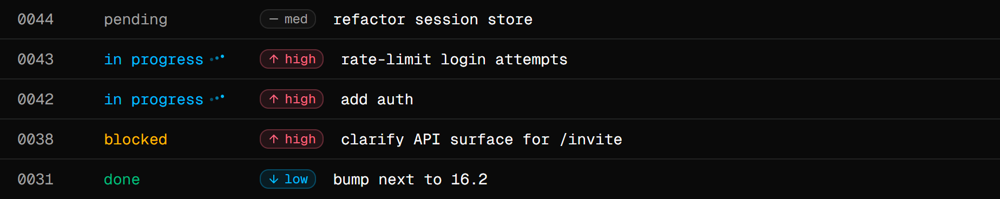

taskdir
A local filesystem based task tracker for AI agents.
Agents work better with a plan.
Schedule work up front with a title, priority, mode, and context. The agent picks it up on the next run instead of asking what to do, and the human-in-the-loop always has a queue too.
Project management on your disk.
Tasks live in the repo next to the code. They branch when you branch, ship with the repo, and disappear when you delete it. No account, no server, no vendor.
The format agents already read.
Markdown and TOML. No custom schema for the model to guess at. Agents just run taskdir <tool> from the shell to list, create, and update — no client wiring. The same tools are also served over stdio MCP for clients that want it.
Every tool is a shell command — taskdir list_tasks, taskdir create_task — and the identical surface is exposed over stdio MCP.
- list_tasksFilter by status, tag, or priority.
- get_taskRead a task folder by id.
- create_taskNew task with title, context, mode, tags.
- update_statusMove a task between status states.
- update_metaEdit title, priority, mode, tags, agent.
- append_to_fileAppend content to a file in the task.
- create_fileCreate a new empty file in the task.
- rename_fileRename a file inside the task folder.
- delete_fileRemove a file from the task folder.
- register_agentRegister an agent name and provider.
stay in the loop
Add, edit, assign, and prioritise. Everything the agent is working on, in one calm view.

Grab the package
Installs the taskdir CLI globally so you can run it from any project. Node 20 or newer.
Set up the project
Creates .taskdir/ and drops in an AGENTS.md so agents drive taskdir from the shell by default. Prefer MCP? Pick it during init to register the server instead.
Open the web view
Starts the local web view and opens it in your browser. Run taskdir web --stop to shut it down.